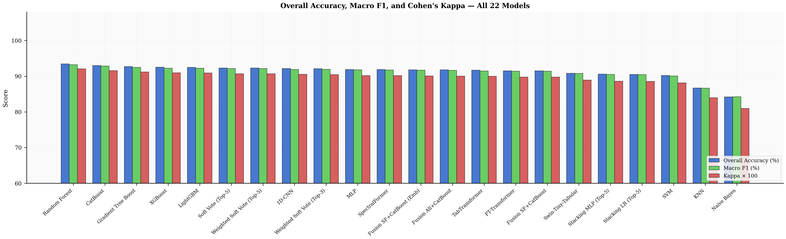
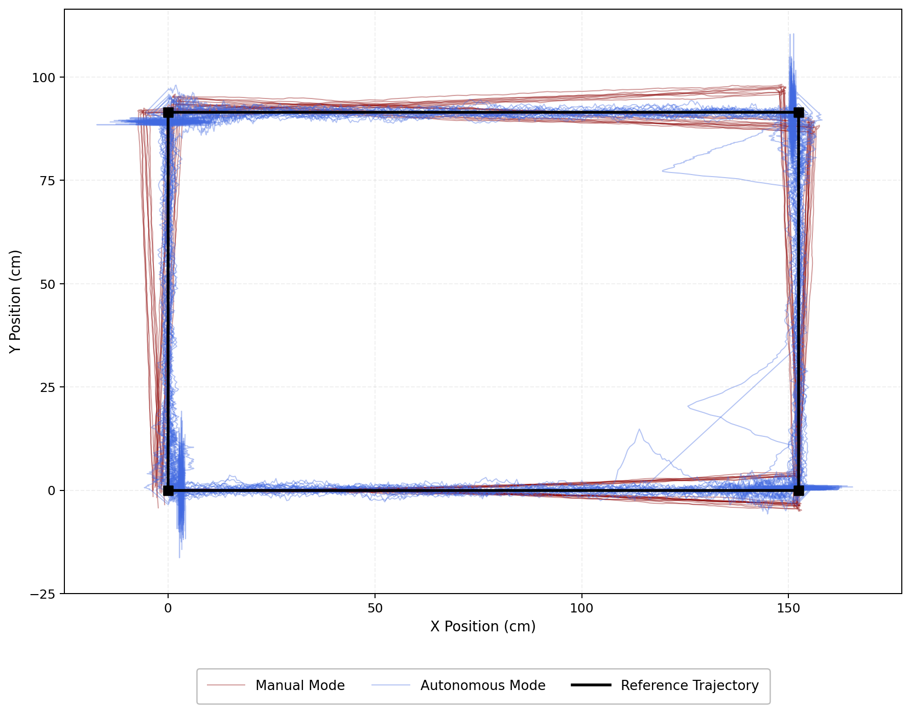
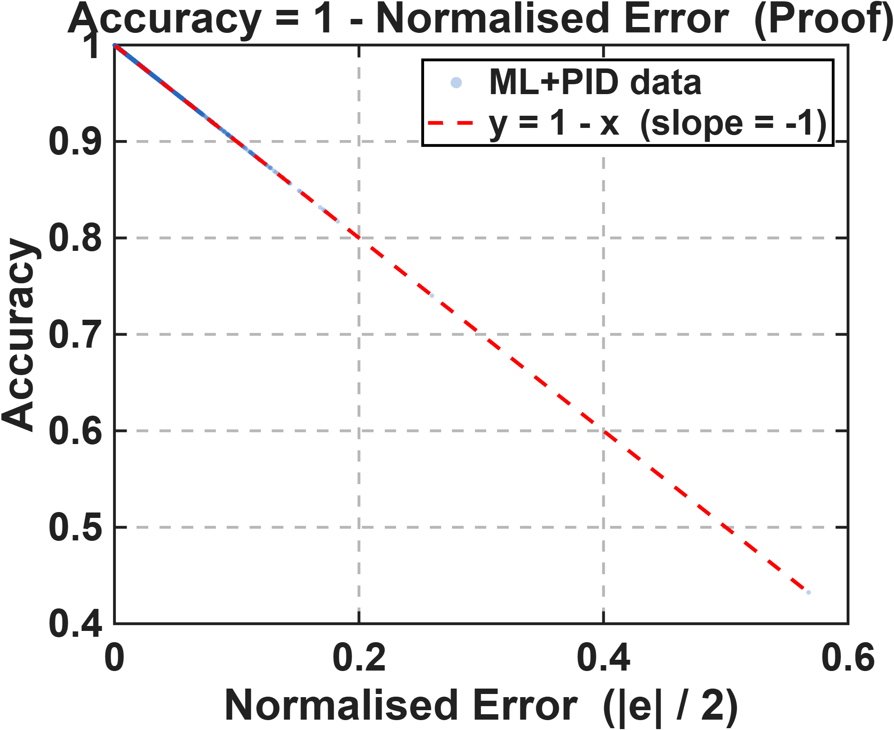

Open to ML · AI · Research Engineering roles
Satwik Shreshth
I hold a Master of Computer Applications from Sikkim University, where my work took shape at the intersection of machine learning and the physical world. I have been drawn to systems that do not simply process data in the abstract, but engage with hardware, sensors, and environments directly, learning to interpret and respond to conditions as they actually exist. This interest has carried across different problem spaces, from intelligent, resource-constrained computing to the analysis of complex natural landscapes, and it continues to shape how I think about building systems that hold up under real-world uncertainty rather than idealized conditions.
Building Intelligent Systems
Machine Learning and Research Engineer working across computer vision, remote sensing, embedded systems, and autonomous robotics.
I am a Machine Learning and Research Engineer. I completed my Master of Computer Applications at Sikkim University (final result awaited) and carried out my dissertation research at CSIR-CMERI's Micro Robotics Laboratory in Durgapur. My work covers the full life cycle of applied AI, from data collection and model design through to statistically validated deployment on resource-constrained hardware.
At CSIR-CMERI I developed the Tripathagamini-S series, a four-version autonomous robot that grew from YOLO vision-guided navigation into a hybrid ML and PID architecture with 99.6% tracking accuracy. My flagship research benchmarks 22 machine learning and deep learning models for land use / land cover classification over East Sikkim using Sentinel-1, Sentinel-2, and SRTM data.
I like systems that hold up outside the lab. In practice that has meant proving Lyapunov stability for a controller before trusting it, getting real-time inference out of a Raspberry Pi CPU, and running 5-fold cross-validation on a custom transformer before quoting its numbers.
AI & Machine Learning
End-to-end ML across classical models, gradient boosting, deep networks, and transformers, tuned with Optuna and benchmarked under rigorous cross-validation.
Computer Vision
YOLO detection and instance segmentation, OpenCV pipelines, homography-based tracking, and ONNX-optimized real-time inference on edge devices.
Remote Sensing
Multi-source satellite analytics with Sentinel-1 SAR, Sentinel-2 optical, and SRTM terrain data through Google Earth Engine and QGIS workflows.
Embedded AI
Deep learning deployed where it is hardest: quantized, ONNX-converted models running in real time on Raspberry Pi, Arduino, and ESP32 hardware.
IoT Systems
Sensor-to-cloud architectures: multi-sensor acquisition, SQLite buffering, and live sync to Firebase and ThingSpeak behind Flask REST APIs.
Research
Hypothesis-driven experimentation with 40-trial controlled studies, effect sizes (Cohen's d), formal stability proofs, and publication-style reporting.
Robotics
Autonomous navigation with hybrid ML + PID control, differential drive, IR sensor arrays, and vision-guided path following at 100 Hz control rates.
Problem Solving
Comfortable owning ambiguous problems end to end: decomposing them, prototyping fast, and iterating against measurable success criteria.
Results at a Glance
Real charts from real experiments. Click any figure to view it full size.
{kind=link}

Publication-style comparison of 22 ML, DL, and transformer models on Himalayan land cover classification from Sentinel-1, Sentinel-2, and SRTM data.
See the research{kind=link}

40-trial controlled study at CSIR-CMERI: YOLO + PID autonomy cut tracking error from 16.77 cm to 2.12 cm with Cohen's d = 8.944.
See the study{kind=link}

Random Forest residual predictor layered on a PID loop, trained on 208,983 time steps, with Lyapunov stability formally proven.
See the robotOpen to Research and Engineering Roles
I am currently seeking positions in Machine Learning, Computer Vision, Remote Sensing, and Research Engineering.